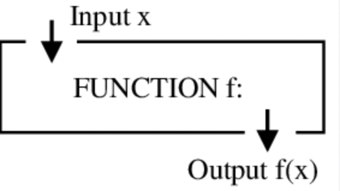

Python#
While we cannot cover all things Python, this subchapter aims to familiarise you with the tools that are essential for working with data in Python. However, there is no substitute for plenty of practice working in Python.
Lists#
Python lists allow you to store a lot of information in an organized manner. They are quite flexible, you can add and remove from them as you please. To create a list, simply using enclose a comma-separated sequence of elements within square brackets ([]). For example, the code below creates a list containing the values 1, a, and ka, and then assigns that list to a variable named first. You can see how the list contains both integers and text stored as strings.
first = [1,'a','ka']
first
[1, 'a', 'ka']
Adding/Removing from a list#
Adding to a list is easy, you can either use the append method or create another 1 element list and add them together.
# Creating another list with just 'alif' and adding the two lists together
first + ['alif']
[1, 'a', 'ka', 'alif']
# Using .append() to add 'alif' to the list
first.append('alif')
first
[1, 'a', 'ka', 'alif']
To remove an element from a list, you can either use the remove method or use list slicing.
# Using .remove() to remove 'alif' from the list
first.remove('alif')
first
[1, 'a', 'ka']
List Slicing#
List slicing helps us access certain elements from a list. You can use it by adding square brackets after your list and specifying the indices of the elements you would like. For example, if you want the first element in a list named numbers, you could use numbers[0] (note: Python is 0-indexed, so the first element is at the index 0, the second element is at the index 1, etc.). If you would instead like to access all the elements from the list numbers, you could use numbers[:]. Let’s look at some examples below.
# Creating a list named `numbers`
numbers = [1,2,3,4,5,6,7,8,9,10]
numbers
[1, 2, 3, 4, 5, 6, 7, 8, 9, 10]
# Accessing the first element
numbers[0]
1
# Accessing the second element
numbers[1]
2
# Accessing the i-th element
i = 9 # `i` represents the number of the element you want to extract. The index is just the number - 1
numbers[i-1]
9
# Accessing the last element
numbers[-1]
10
# Accessing the second last element
numbers[-2]
9
# Accessing all the elements
numbers[:]
[1, 2, 3, 4, 5, 6, 7, 8, 9, 10]
# Accessing all the elements between the first and the fifth element
numbers[0:4] # Notice how the 0th index is included but the 4th index is not included
[1, 2, 3, 4]
# Accessing every other element between the 0th and the 7th index
numbers[0:7:2]
[1, 3, 5, 7]
# Accessing every third element between the 0th and the 7th index
numbers[0:7:3]
[1, 4, 7]
We can also use list slicing to remove elements from a list. For example, let’s say we want numbers2 to be a list that contains every single-digit number in numbers.
print(f'The numbers list is {numbers}')
numbers2 = numbers[:-1] # Accessing every index except the last one
print(f'The numbers2 list is {numbers2}')
The numbers list is [1, 2, 3, 4, 5, 6, 7, 8, 9, 10]
The numbers2 list is [1, 2, 3, 4, 5, 6, 7, 8, 9]
Loops#
Loops help us iterate over every element in an iterable object (aka objects containing a finite number of values). For example, the code below prints every single month that is stored in the list months.
months = ["January", "February", "March", "April", "May", "June",
"July", "August", "September", "October", "November", "December"]
for month in months:
print(month)
January
February
March
April
May
June
July
August
September
October
November
December
We can combine if statements with loops to perform more complicated tasks. For example, let’s print every single month that doesn’t start with the letter J.
for month in months:
if not month.startswith('J'):
print(month)
February
March
April
May
August
September
October
November
December
While the examples above have both used for-loops, we can also use while loops. For example, the code below prints out the first 6 months in the list months.
i = 0
while i < 6:
print(months[i])
i += 1
January
February
March
April
May
June
List Comprehensions#
A list comprehension in Python is essentially a simple for-loop written with special syntax. For example, we can convert our first for loop (printing every month) to a list comprehension, as done below.
[print(month) for month in months];
# Note: we include the ; at the end to avoid returning any output, as the only thing we want are print statements
# Read more here: https://www.geeksforgeeks.org/difference-between-return-and-print-in-python/
January
February
March
April
May
June
July
August
September
October
November
December
Let’s make things more complicated; let’s use a list comprehension to get a list containing every single month that doesn’t start with the letter J.
[month for month in months if not month.startswith('J')]
['February',
'March',
'April',
'May',
'August',
'September',
'October',
'November',
'December']
Dictionaries#
Python dictionaries are collections of key-value pairs, where each ‘key’ is associated with a certain ‘value’. They are defined using {}, and can contain as many values as you like. You can read more about them here. We define a sample dictionary below.
tel = {'peter': 7214, 'rohan': 5414, 'yiyang': 1685, 'eric': 9522}
tel
{'peter': 7214, 'rohan': 5414, 'yiyang': 1685, 'eric': 9522}
Here, the keys are the names of the people, and the values are the last four digits of their phone numbers. You can retrieve the value associated with any key but not vice versa. For example, the code below retrieves the last 4 digits of Peter’s phone number, but you cannot find out the name of the person whose phone number ends with 9522.
tel['peter'] # Retrieves last 4 digits of Peter's number
7214
#tel[7214] This does not work
You can easily add and delete key-value pairs, as shown below.
# add a new key value pair
tel['akshat'] = 3698
# delete an existing key value pair (two ways)
tel.pop('rohan')
del tel['peter']
tel # added akshat, removed rohan and peter
{'yiyang': 1685, 'eric': 9522, 'akshat': 3698}
Functions#
Functions take in certain values (as defined by their parameters, or the values you pass in), perform some processing with them and output some other values. A simple diagram representing this is shown below:

We will often be using functions defined by libraries discussed later on in the book. However, you can also define your own functions. An example is included below.
def add2(x):
"""This docstring explains what this function does: it adds 2 to a number."""
return x + 2
add2(8) # example usage
10
You can see the output of help(function) contains the description in the docstring. This is often helpful to view the documentation of a function.
help(add2)
Help on function add2 in module __main__:
add2(x)
This docstring explains what this function does: it adds 2 to a number.